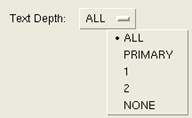
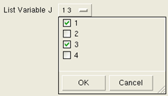

Command type: Customization command for Calibre Interactive.
Inserts a Variable statement in the Calibre Interactive control file, or defines a Tcl variable in the case of TVF rule files.
CUSTOM::VARIABLE ‑name var_name
[-choices { “” | choices_list } [‑multi_choice {0|1}] ] [-initval init_value]
[‑vartype { auto | numeric | string [‑file_browser {0|1}] | expression } ]
[-prompt prompt_text] [‑tooltip tooltip_string] [‑multiline {0|1}]
[-boolean {0 | 1} [-select {0|1}] [-enable {0|1}]] [-display {0|1}]
[-tool {DRC | LVS | PEX | DFM | PERC | tool_list}] [-tvf {0|1}]
[‑vtype type] [‑vcmd ‘[’ list v_proc ‘]’ ]
[ {{-master master_spec} [‑master_select {0 | 1}]} | ‑master_expr expr_spec ]
A required option and parameter that specifies the name of the variable output to the control file.
Specifies whether a text entry field or a dropdown list with a list of choices is displayed for the control.
“” (empty string) — Display a text entry field for specifying the value of the variable. A text entry field is also displayed if the ‑choices argument is not included.
choices_list — Display a control button with a dropdown list of choices for the value of the variable. The values are displayed as mutually exclusive radio buttons.
The choices_list can be specified in the following ways:
A Tcl list of single elements. For a list of single elements, the values themselves are displayed in the dropdown list of the control button.
A Tcl list of two-element sublists. The first element is displayed in the fields of the dropdown list and the second element is the actual value. For example:
{{"poly layer" 7} {"metal layer" 5}}where the braces are required to indicate a Tcl list.
Specifies whether multiple items can be selected from the choices_list. This switch and value can only be used if “-choices choices_list” is specified. The default is 0, indicating that only one value can be selected.
If “‑multi_choice 1” is specified the ‑initval parameter may specify a list. See “Example 3: CUSTOM::VARIABLE with Multiple Selections”.
Specifies an initial value with one of the following choices:
The default value from the ‑choices list, if present.
The initial value of the variable. This value appears in the text entry field if the ‑choices option is not specified or if ‑choices “” is specified.
The init_value may be a list if “‑multi_choice 1” is used.
The init_value is read and applied the first time the Customization GUI is opened or if the customization file changes; however, init_value is overridden with the runset value if the runset option cmnCustomFileOverrideValues specifies a value for the control.
The init_value is always applied if the Customization GUI is opened using the Load button in the Customization Settings dialog box; the runset value specified with the runset option cmnCustomFileOverrideValues is not used.
Specifies how to interpret the input value for the variable and whether to surround the value with quotes.
auto — This is the default. If the input value is a floating point number, write the value without quotes; otherwise, surround the value with double quotes. If embedded spaces are present, the value is interpreted as a list and each list element is surrounded by double quotes.
numeric — Interpret the input value as a number and do not surround it with double quotes.
string [‑file_browser {0|1}]
string — Interpret the input value as a string and surround the value with double quotes. If embedded spaces are present, the value is interpreted as a list and each list element is surrounded by double quotes.
‑file_browser {0|1} — Specifies whether or not to includes a file browser button with the control. The ‑file_browser option is only valid with “‑vartype string”.
expression — Interpret the value as an expression and do not surround with double quotes. Embedded spaces are kept.
Most of the possibilities for ‑vartype and the corresponding output in the control file are shown in “Example 5: CUSTOM::VARIABLE with Different Variable Types.”
Places the string prompt_text next to the control button or checkbox.
Specifies a tooltip tooltip_string for the control. Line breaks in tooltip_string are preserved in the generated tooltip.
Controls whether the text entry box is a single line (0) or multiple lines (1). The default is 0.
Controls the display of the checkbox, where 1 specifies to display the checkbox. The default value is 0 (do not a checkbox) if ‑boolean is not specified.
If a checkbox is used, the Variable statement is written to the control file only when the checkbox is selected.
Controls the initial setting of the ‑boolean checkbox. The default value is 1 (selected) if this option is not specified.
Controls whether the ‑boolean checkbox is active (responds to user input). The default value is 1 (enabled) if this option is not specified.
Controls whether the control is displayed in the customization dialog box. The default value is 1 (true) if this option is not specified.
If included, the statement applies only to the specified tool(s). To specify more than one tool, provide a Tcl list; for example: {DRC DFM}
If ‑tool is not specified, the command applies to all tools.
Adds a Tcl variable to the Calibre Interactive control file when 1 is specified and you are using a TVF rule file. The default is 0 (false) if this option is not specified. If the option ‑tvf 1 is specified when not using a TVF rule file, the customization command does not output any statement to the control file.
Verify the type of the input if the control creates a text entry field. The parameter type is one of the following:
none — Any type is accepted. This is the default if the ‑vtype option is not specified.
nospaces — No spaces are allowed in the input.
integer — Integer input.
float — Floating point input. Scientific notation is accepted; for example: -54.3E6.
nonnegint — Non negative integer input.
nonnegreal — Non negative floating point input. Scientific notation is not accepted.
Input that does not satisfy the specified type is ignored.
Specifies a Tcl procedure v_proc to call in order to perform input verification for controls that create a text entry field. The brackets are required to cause command substitution. The procedure v_proc should return 1 if the input is acceptable and return 0 otherwise. See “Input Type Checking for Customization GUI Entry Fields”.
An optional keyword and parameter set that specifies the current control as a dependent control to another primary control in the customization file. In other words, this option specifies that the appearance of this GUI object in the customization window depends on the value of another control referenced by master_spec or expr_spec.
See “Primary-Dependent Commands” for a complete description of using the ‑master option.
Inserts a Variable statement in the Calibre Interactive control file. It displays either a text entry field (the default) or a button with a dropdown list (‑choices choices_list). Multiple items from the choices_list may be selected if “‑multi_choice 1” is specified.
If the Variable value is a string (‑vartype string), the option “‑file_browser 1” can be specified to include a file browser button with the control.
The variable must be set to a value (not an empty string or white space) for the Variable statement to be written to the control file.
If “‑tvf 1” is included, a Tcl variable is defined in the Calibre Interactive control file rather than adding a Variable statement. Two statements are added to the control file: a Tcl set command and a tvf::set_global_variable command.
The ‑vtype and ‑vcmd switches are used to specify type checking for input fields. The input type checking performed with ‑vtype float and nonnegreal only checks that the input characters are valid for the specified type—checking for valid numbers is not performed. See “Input Type Checking for Customization GUI Entry Fields” for more information and examples.
This example generates a “Variable “RES_TOL” 1” statement in the rule file for all Calibre runs. A text entry field with the prompt “var RES_TOL” is displayed in the Customization Settings dialog box for all tools.
CUSTOM::VARIABLE ‑name "RES_TOL" -initval 1 -prompt "var RES_TOL"
This example generates a default “Variable “DEPTH” ALL” statement in the control file for a Calibre Interactive nmLVS run. A “Text Depth:” prompt appears in the Customization Settings dialog box. A button with a dropdown list is displayed, where the selections in the list are ALL, PRIMARY, 1, 2, and NONE.
CUSTOM::VARIABLE -name "DEPTH" -choices {ALL PRIMARY 1 2 NONE} \
-prompt "Text Depth: " -tool LVSThis displays the following control with a dropdown list of choices:

CUSTOM::VARIABLE -name "LISTVAR_J" -initval [list 1 3] \
-choices {1 2 3 4} -multi_choice 1 \
-prompt "List Variable J" This displays the following control with a dialog to choose selections:

The following SVRF statement is added to the control file:
VARIABLE "LISTVAR_J" "1" "3" If a TVF rule file is used and “‑tvf 1” is included in the CUSTOM::VARIABLE statement for “Example 3: CUSTOM::VARIABLE with Multiple Selections”, the following Tcl code is added to the control file:
#!tvf
## +++ TVF CUSTOMIZATION SETTINGS START +++
set VAR_J "1 3"
tvf::set_global_variable VAR_J "1 3"
## +++ TVF CUSTOMIZATION SETTINGS END +++ The ‑vartype switch specifies how to interpret the input value. The following customization file demonstrates the use of the ‑vartype switch.
CUSTOM::VARIABLE -name "num_auto" -initval "2300" -vartype auto \
-prompt "number, auto type"
CUSTOM::VARIABLE -name "num_string" -initval "2300" -vartype string \
-prompt "number, string type"
CUSTOM::VARIABLE -name "num_numeric" -initval "2300" -vartype numeric \
-prompt "number, numeric type"
CUSTOM::VARIABLE -name "mixed_auto" -initval "34xyz" -vartype auto \
-prompt "mixed value, auto type"
CUSTOM::VARIABLE -name "mixed_string" -initval "34xyz" -vartype string \
-prompt "mixed value, string type"# control has a file browser to select a filepath for the filename string
CUSTOM::VARIABLE -name "map_filepath" -initval "map.txt" \
-vartype string -file_browser 1 -prompt "map file"
# This control causes an error since 34xyz is not a valid number
#CUSTOM::VARIABLE -name "mixed_numeric" -initval "34xyz" \
# -vartype numeric -prompt "mixed value, numeric type"
CUSTOM::VARIABLE -name "var_list" -initval "23 24" -vartype auto \
-prompt "list, auto type"# assign a value to var_num for use in the expression in the next control
CUSTOM::VARIABLE -name var_num -initval 10 \
-prompt "enter var_num for expression"
CUSTOM::VARIABLE -name "var_expression" -initval "(var_num *2) + 5" \
-vartype expression -prompt "Var_num with expression"
CUSTOM::VARIABLE -name MGC_HOME -initval ENVIRONMENT \
-vartype expression -display 0The above customization file results in the following output to the control file by default:
// +++ CUSTOMIZATION SETTINGS START +++
VARIABLE "num_auto" 2300
VARIABLE "num_string" "2300"
VARIABLE "num_numeric" 2300
VARIABLE "mixed_auto" "34xyz"
VARIABLE "mixed_string" "34xyz"
VARIABLE "map_filepath" "map.txt"
VARIABLE "var_list" "23" "24"
VARIABLE "var_num" 10
VARIABLE "var_expression" (var_num *2) + 5
VARIABLE "MGC_HOME" ENVIRONMENT
// +++ CUSTOMIZATION SETTINGS END +++ This example uses the ‑tvf option.
CUSTOM::VARIABLE -name var_tvfX -initval "procA" -tvf 1 -prompt "var_tvfX" This code produces the following output in the TVF control file:
#!tvf
## +++ TVF CUSTOMIZATION SETTINGS START +++
set var_tvfX "procA"
tvf::set_global_variable var_tvfX "procA"
## +++ TVF CUSTOMIZATION SETTINGS END +++